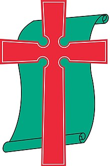

전남광주통합특별시 무안군 청계면 백련동1길 17-4
010 3501 8542 | https://ekodichurch.kr
010 3501 8542 | https://ekodichurch.kr

에 코 디 교 회창립 24.02.03.(03) | 발행 26.11.01(44)This Week’s Scripture for Meditation and Sharing · 11/01–11/07
| 일 11/01 | 월 11/02 | 화 11/03 | 수 11/04 | 목 11/05 | 금 11/06 | 토 11/07 |
|---|---|---|---|---|---|---|
| 고전 3:1-9 | 고전 3:10-23 | 고전 4:1-13 | 고전 4:14-21 | 고전 5:1-13 | 고전 6:1-11 | 고전 6:12-20 |
Community Announce
- 새로 나오신 분과 오랜만에 나오신 분을 주님의 이름으로 환영합니다.
- 매주 화요일 오전 10시, 평공목(평생공부하는목회자) 모임이 있습니다.
- 매주 토요일 오전 11시, 에코디 토요모임을 위해 기도와 협력을 위해 기도해주세요.
- 매주 일요일, 함께찬양하는사람들(함찬사) 모임을 위해 기도해 주세요.
- 신학대학원 입학과 학업을 준비하는 두번요 형제를 위해 기도해 주세요.
- 에코디교회·에코디선교회의 지역 섬김을 위해 함께 기도해 주세요.
- 오늘 11월 1일은 성령강림절 후 스물셋째 주일이자 예장통합 학원선교주일입니다. 심고 물 주는 우리의 수고 위에 자라게 하시는 하나님을 바라봅니다.
- 11월 1일 학원선교주일을 맞아 학교와 배움의 자리에서 복음을 심고 가꾸는 이들을 위해 기도해 주세요.
- 사람을 따라 나뉘지 않고 그리스도 안에서 함께 자라 가는 공동체가 되도록 기도해 주세요.
- 온라인 예배에서 다국어 자막(영어·중국어·일본어·베트남어·몽골어)을 제공합니다.
Community Confession
하나님은 우리를 세상에서 하나님의 구별된 백성으로 부르셨습니다.
(갈 4:4-7, 롬 8:14-17, 벧전 2:9, 히 10:24-25)
하나님은 우리를 복음으로 서로 환대하며 나누는 공동체로 세우셨습니다.
(창 1:27, 31, 행 2:42-47, 롬 12:13)
하나님은 우리를 세상에서 자기비움과 자기부정으로 자유롭고 거룩하게 하십니다.
(행 1:8, 롬 8:28, 벧전 2:11-12, 렘 29:4-7, 빌 2:5-8, 눅 9:23)
Those who serve
| 구분 | 이름 | 구분 | 이름 |
|---|---|---|---|
| 대표 | 정찬균목사 | 찬양 | 박은희권사 |
| 협동 | 오원옥목사 | 연주 | 정성, 정결 |